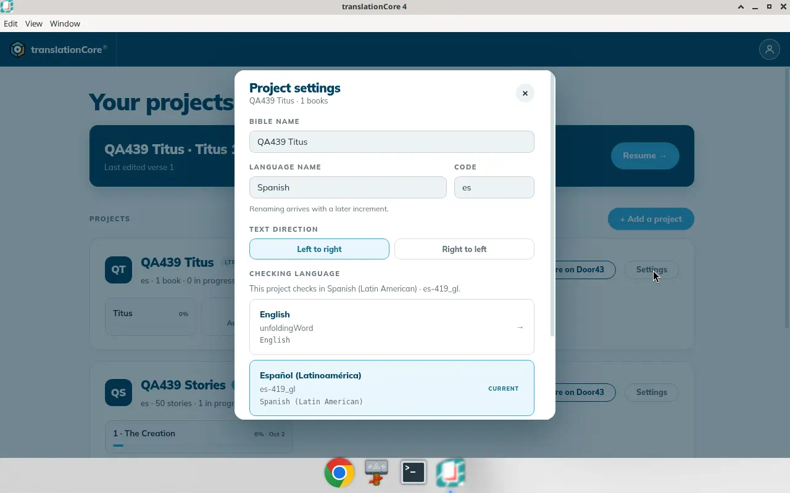
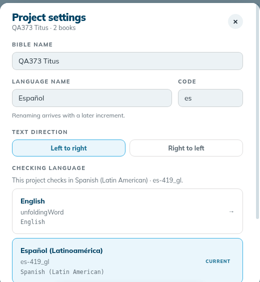
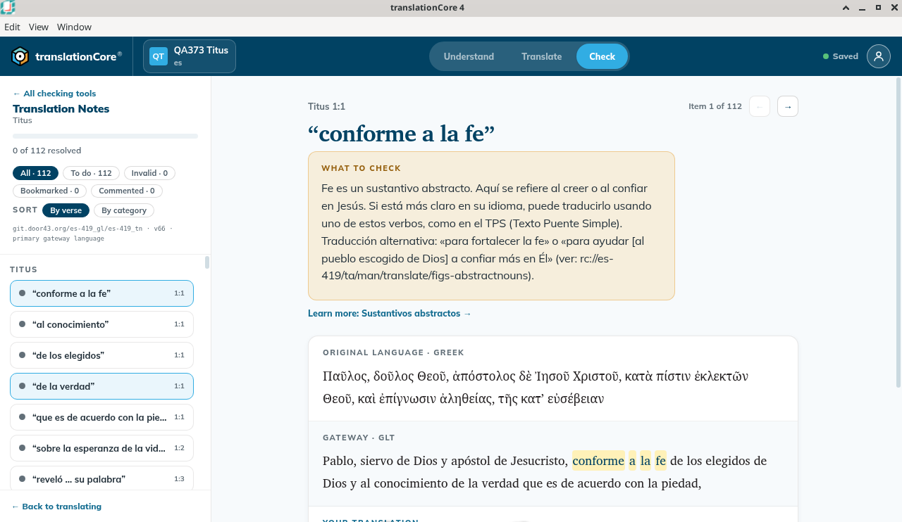

Change the checking language
Choose which installed gateway language this project checks against. The choice is in Project settings. Decisions that match a check in the new notes carry over; the rest come back as work.
Where in the app: Home › project card › Settings › Project settings › Checking language
What it is
Checks are made against the helps of one gateway language (the checking language). You choose it in Project settings, from the languages whose notes are on this computer.
When to use it
When your team moves from English helps to helps in a language they read better.
Step by step
- Download the notes for the new language first if that language is not listed (see Download source texts). On Home, click Settings on the card, then Manage source texts →. Under Choose your gateway language, pick the language, for example Español (Latinoamérica) (
es-419_gl), and click ⇣ Download package. When it is done it says "✓ Titus · Spanish (Latin American) is ready". - On Home, click Settings on the project card. Checking language is in that dialog. It is not in the top bar.
- Read the sentence under the heading, for example "This project checks in English · unfoldingWord." Each downloaded language has its own row, for example Español (Latinoamérica), es-419_gl, Spanish (Latin American).
- Click the other language. A dialog opens: "Change checking language to Spanish (Latin American)?" It says how many of your decisions were made against the notes you are leaving, for example "3 decisions in Titus were made against the notes you are leaving.", and for each tool how many carry over: "Titus · Translation Notes: 0 carried over, 3 to check again".
- Click "Change to Spanish (Latin American)" to confirm, or "Keep en" to stay with the current language.
- Project settings now says "This project checks in Spanish (Latin American) · es-419_gl." and the Spanish row is marked Current.
- Open Check › Translation Notes. The package line reads
git.door43.org/es-419_gl/es-419_tn · v66 · primary gateway language, and the quotes are Spanish, for example "conforme a la fe". The progress line counts the decisions that carried over (with 0 carried over: "0 of 112 resolved"). - Decide the checks again. ✓ Mark valid saves, the indicator shows Saved, and the count goes up (1 of 112, then 2 of 112).
- After a full restart, Resume opens Check on the Spanish notes, in the same tool.
What you should see
- Checking language lists the installed languages. The current one is marked Current.
- The sentence under the heading is "This project checks in {lang} · {org}."
- Choosing the other language opens "Change checking language to {lang}?" with how many decisions in each book were made against the notes you are leaving, and for each tool how many carry over and how many to check again (for example "Titus · Translation Notes: 0 carried over, 3 to check again").
- After the change, Check counts exactly the decisions the dialog said would carry over, shows the new notes' quotes, and every check can be decided again with Saved showing.
Screenshots

Screenshot comingProject settings for QA439 Titus. Español (Latinoamérica) is the Current checking language. The sentence reads This project checks in Spanish (Latin American) · es-419_gl.
img/rs-checking-language-1.png
Screenshot comingBuild 79d3017: the change dialog for QA373 Titus. Change checking language to Spanish (Latin American)? 3 decisions in Titus were made against the notes you are leaving. Decisions that match a check in the new notes carry over. The rest stop applying, so those checks come back as work — a book that was finished will not be finished any more. Nothing is deleted. Titus · Translation Notes: 0 carried over, 3 to check again. Buttons Keep en and Change to Spanish (Latin American).
img/rs-checking-language-2.png
Screenshot comingBuild 79d3017: Project settings after the change. This project checks in Spanish (Latin American) · es-419_gl. Español (Latinoamérica), es-419_gl, Spanish (Latin American), marked CURRENT; English unfoldingWord above it.
img/rs-checking-language-3.png
Screenshot comingBuild 79d3017: Check › Translation Notes after the change. git.door43.org/es-419_gl/es-419_tn · v66 · primary gateway language, 0 of 112 resolved, Item 1 of 112, the Spanish quote “conforme a la fe” for Titus 1:1.
img/rs-checking-language-4.pngTips
- Which decisions carry over. A decision carries over only when the new notes have a matching check: the same note on the same words of the original text. Notes in another language are often written differently: the Spanish notes for Titus 1:1 split one English note into several shorter ones, and two of the English notes have no Spanish note at all. So the three English decisions in this test had nothing to match, and the dialog said "0 carried over, 3 to check again". That is correct, not a fault.
- Decisions that do not carry over are not deleted. They stop counting, and those checks come back as work. A book that was finished will not be finished any more.
- The new language's checks start as To do, including words you had marked Invalid in English, because they are new checks.
- The Current badge is the language the project checks in now.
- Known issue: The same language has two names. The lists say "Español (Latinoamérica)"; the sentence under Checking language, the change dialog and the download message say "Spanish (Latin American)". The button to cancel the change names the language code instead: "Keep en".
- Known issue: If you change to another language and then back again, a check you had marked Invalid yourself comes back as To do, not Invalid. Mark it again. (Found by reading the app's code; not seen on screen in this test.)
Known limits
- The set must be complete: "Download the {lang} notes, words and academy before pinning them — a language set must be complete."
- The change is refused if books already checked are not covered by the new language.